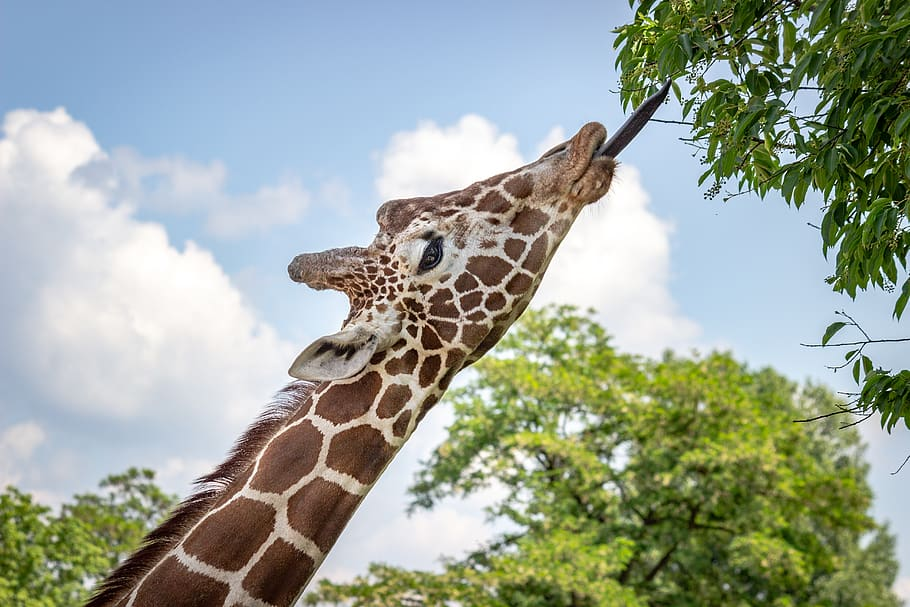
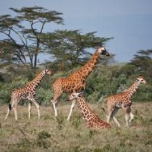
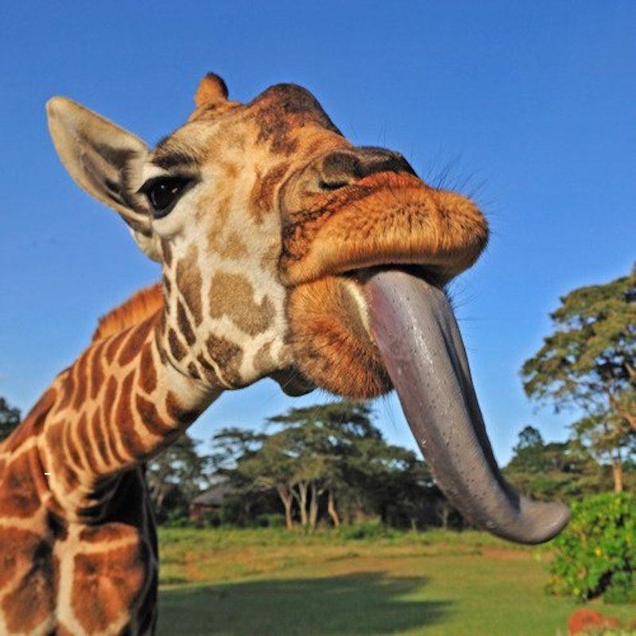

Alimento
Se alimenta principalmente de las hojas de la acacia, que ramonea en alturas inaccesibles para la mayoría de los demás herbívoros.
Conoce mas

Altura
La jirafa es el animal terrestre más alto del mundo y uno de los protagonistas indiscutibles de la sabana africana.
Conoce mas

Comunicacion
Las jirafas no tienen cuerdas vocales pero entre ellas se comunican a través de sonidos que no pueden ser percibidos por el oído de los seres humanos.
Conoce mas